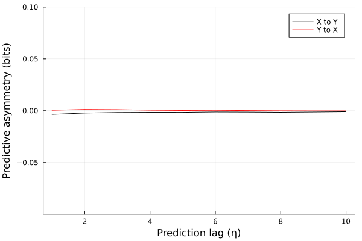
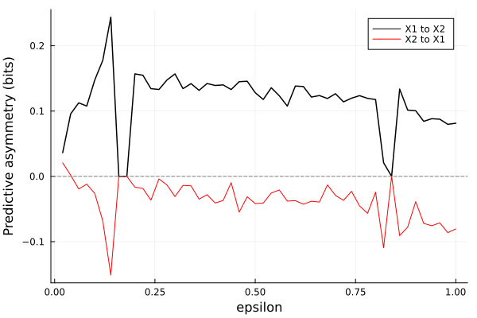
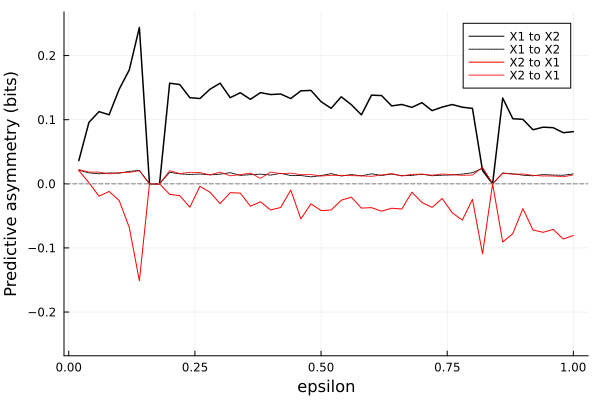

Predictive asymmetry
CausalityTools.PredictiveAsymmetry.predictive_asymmetry — FunctionGeneral interface
predictive_asymmetry(s, t, [c],
estimator::TransferEntropyEstimator, ηs;
d𝒯 = 1, dT = 1, dS = 1, τT = -1, τS = -1,
[dC = 1, τC = -1,],
normalize::Bool = false, f::Real = 1.0) → Vector{Float64}Compute the predictive asymmetry[Haaga2020] 𝔸(s → t) for source time series s and target time series t over prediction lags ηs, using the given estimator and embedding parameters d𝒯, dT, dS, τT, τS.
If a conditional time series c is provided, compute 𝔸(s → t | c). Then, dC and τC controls the embedding dimension and embedding lag for the conditional variable.
Returns
Returns a vector containing the predictive asymmetry for each value of ηs.
Normalization (hypothesis test)
If normalize == true (the default), then compute the normalized predictive asymmetry 𝒜.
In this case, for each $\eta$ in ηs, compute 𝒜(η) by normalizing 𝔸(η) to some fraction f of the mean transfer entropy over prediction lags $-\eta, ..., \eta$ (exluding lag 0).
Haaga et al. (2020)[Haaga2020] uses a normalization with f=1.0 as a built-in hypothesis test, avoiding more computationally costly surrogate testing.
Estimators
Any estimator that works for transferentropy will also work with predictive_asymmetry. It is recommended to use either the rectangular binning-based methods or the symbolic estimators for the fastest computations.
Examples
using CausalityTools
# Some example time series
x, y = rand(100), rand(100)
# 𝔸(x → y) over prediction lags 1:5
𝔸reg = predictive_asymmetry(x, y, VisitationFrequency(RectangularBinning(5)), 1:5) Example: no coupling
Here, we'll compute the predictive asymmetry on 100 different sets of random time series. Because there is no dynamical coupling between the time series, we expect the predictive asymmetry to be zero.
We'll use a visitation frequency estimator.
using CausalityTools, Plots, StatsBase
# Define prediction lags and estimator
ηs = 1:10
est = VisitationFrequency(RectangularBinning(5)) # guess that 5 bins along each coordinate axis is sufficient
nreps = 100
𝔸xy = zeros(nreps, length(ηs))
𝔸yx = zeros(nreps, length(ηs))
for i = 1:nreps
# Some example time series
x, y = rand(1000), rand(1000)
𝔸xy[i, :] = predictive_asymmetry(x, y, est, ηs)
𝔸yx[i, :] = predictive_asymmetry(y, x, est, ηs)
end
plot()
plot!(ηs, dropdims(mean(𝔸xy, dims = 1), dims = 1), label = "X to Y", c = :black)
plot!(ηs, dropdims(mean(𝔸yx, dims = 1), dims = 1), label = "Y to X", c = :red)
ylims!((-0.1, 0.1))
xlabel!("Prediction lag (η)")
ylabel!("Predictive asymmetry (bits)")
As expected, because there is no dynamical coupling between the variables, the predictive asymmetry is around zero for all prediction lags.
Example: coupled Ulam maps
Here, we'll use the same example as in Schreiber's transfer entropy paper and see if the predictive asymmetry is able to decipher the directional coupling in the Ulam system.
Let's start by defining the Ulam system. Then, we generate time series for different values of the parameter ε and compute the predictive asymmetry for prediction lags ηs = 1:10.
We expect that the predictive asymmetry is positive if there is a directional coupling, and zero or negative if there is no directional coupling.
using DynamicalSystems, CausalityTools, Plots, Random, StatsBase, TimeseriesSurrogates
Random.seed!(12234)
function ulam_system(dx, x, p, t)
f(x) = 2 - x^2
ε = p[1]
dx[1] = f(ε*x[length(dx)] + (1-ε)*x[1])
for i in 2:length(dx)
dx[i] = f(ε*x[i-1] + (1-ε)*x[i])
end
end
ds = DiscreteDynamicalSystem(ulam_system, rand(100) .- 0.5, [0.04])
trajectory(ds, 1000; Ttr = 1000)
εs = 0.02:0.02:1.0
ηs = 1:10
pas_x1x2 = zeros(length(εs), length(ηs));
pas_x2x1 = zeros(length(εs), length(ηs))
for (i, ε) in enumerate(εs)
set_parameter!(ds, 1, ε)
# Use time series consisting of 1000 points
tr = trajectory(ds, 1000; Ttr = 5000)
X1 = tr[:, 1]; X2 = tr[:, 2]
@assert !any(isnan, X1)
@assert !any(isnan, X2)
binning = RectangularBinning(0.2) # guess an appropriate bin width of 0.2
pas_x1x2[i, :] = predictive_asymmetry(X1, X2, VisitationFrequency(binning), ηs)
pas_x2x1[i, :] = predictive_asymmetry(X2, X1, VisitationFrequency(binning), ηs)
endLet's pick the predictive asymmetry at prediction lag η = 10.
# Pick predictive asymmetry at η = 10
pa_x1x2 = [pas_x1x2[i, end] for i = 1:length(εs)]
pa_x2x1 = [pas_x2x1[i, end] for i = 1:length(εs)]
plot()
plot(εs, pa_x1x2, label = "X1 to X2", c = :black, lw = 1.5)
plot!(εs, pa_x2x1, label = "X2 to X1", c = :red)
xlabel!("epsilon")
ylabel!("Predictive asymmetry (bits)")
hline!([0], ls = :dash, label = "", c = :grey)"/home/runner/work/CausalityTools.jl/CausalityTools.jl/docs/build/predasym.svg"
As expected, predictive asymmetry is positive in the direction $X_1 \\to X_2$, and negative in the direction $X_2 \\to X_1$.
Are the results significant? We can test that using a surrogate test. We'll use random shuffle surrogates from the TimeseriesSurrogates.jl package.
Using the same parameters, as before, we generate time series for the same values of εs, but for each ε, we generate 100 different shuffled versions of the source time series. For each of those surrogate time series, we compute the predictive asymmetry and pick the value at η = 10
n_surr = 100
pas_x1x2_surr = zeros(length(εs), n_surr);
pas_x2x1_surr = zeros(length(εs), n_surr)
for (i, ε) in enumerate(εs)
set_parameter!(ds, 1, ε)
tr = trajectory(ds, 1000; Ttr = 5000)
X1 = tr[:, 1]; @assert !any(isnan, X1)
X2 = tr[:, 2]; @assert !any(isnan, X2)
S1 = surrogenerator(X1, RandomShuffle())
S2 = surrogenerator(X2, RandomShuffle())
binning = RectangularBinning(0.2) # guess an appropriate bin width of 0.2
pas_x1x2_surr[i, :] = [predictive_asymmetry(S1(), X2, VisitationFrequency(binning), ηs)[end] for k = 1:n_surr]
pas_x2x1_surr[i, :] = [predictive_asymmetry(S2(), X1, VisitationFrequency(binning), ηs)[end] for k = 1:n_surr]
endWe'll plot the 95th percentile of the surrogate ensemble predictive asymmetries (dashed lines) along with the original predictive asymmetries (solid lines). If the predictive asymmetry computed on the original time series exceed that of the 95th percentile of the surrogate ensemble, then the predictive asymmetry is significant.
uq_x1x2 = [quantile(pas_x1x2_surr[i, :], 0.95) for i = 1:length(εs)]
uq_x2x1 = [quantile(pas_x2x1_surr[i, :], 0.95) for i = 1:length(εs)]
ymax = maximum(abs.([pa_x1x2; pa_x2x1; uq_x1x2; uq_x2x1]))*1.1
plot(ylims = (-ymax, ymax))
plot!(εs, pa_x1x2, label = "X1 to X2", c = :black, lw = 1.5)
plot!(εs, uq_x1x2, label = "X1 to X2", c = :black, ls = :dot)
plot!(εs, pa_x2x1, label = "X2 to X1", c = :red)
plot!(εs, uq_x2x1, label = "X2 to X1", c = :red, ls = :dot)
xlabel!("epsilon")
ylabel!("Predictive asymmetry (bits)")
hline!([0], ls = :dash, label = "", c = :grey)"/home/runner/work/CausalityTools.jl/CausalityTools.jl/docs/build/predasym_withsurr.svg"
The predictive asymmetry in the direction $X_1 \\to X_2$ is above the 95th percentile of the surrogates for most parameters. Thus, we reject the null hypothesis that $X_1$ does not influence $X_2$ and accept the alternative hypothesis that $X_1$ does in fact influence $X_2$. In the context of causal inference, this means that there is evidence of directional dynamical coupling from $X_1$ to $X_2$ and that $X_1$ is causally coupled to $X_2$.
In the oppposite direction, $X_2 \\to X_1$, where there should not be any directional coupling (by definition), the predictive asymmetries are below the surrogates, so we cannot reject the null hypothesis that $X_2$ does not influence $X_1$. Hence, there is no evidence of directional dynamical coupling from $X_2$ to $X_1$.
- Haaga2020Haaga, Kristian Agasøster, David Diego, Jo Brendryen, and Bjarte Hannisdal. "A simple test for causality in complex systems." arXiv preprint arXiv:2005.01860 (2020).